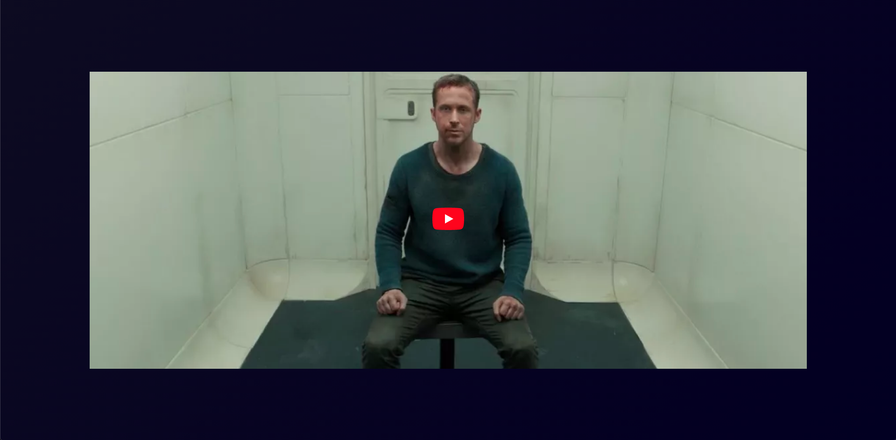

De opdracht voor het vak web typografie was het volgende: “Als je doof bent, of als je om een andere reden geen geluid kunt horen, dan mis je veel informatie als je een film kijkt. Knisperende voetstappen, langzaam aanzwellende muziek, nerveus getik op een deur, je hoort het natuurlijk allemaal niet. Nu bestaat er zoiets als closed caption, wat een type ondertiteling is waarbij ook dingen als omgevingsgeluiden en de muziek beschreven worden. Hierdoor krijgt een kijker die informatie wel binnen. Alleen wordt die auditieve informatie nogal neutraal beschreven. Het geluid van huilend persoon zou bijvoorbeeld beschreven kunnen worden als snikgeluid op de achtergrond. En iemand die lacht zou geschreven kunnen worden als iemand lacht. Heel neutraal, bijna zakelijk, en bovendien allebei in precies hetzelfde neutrale lettertype. Terwijl het toch echt over twee heel verschillende emoties gaat. Dat kan visueel sterker. En dat gaan jullie doen.”
Naar VideoBij dit vak vond ik het eerst lastig om mij in te beelden hoe het is om doof te zijn en een film te kijken. Ik dacht altijd dat ondertiteling wel genoeg zou zijn om een film te kunnen kijken, maar tijdens het maken besefte ik mij hoeveel geluid doet met een film. Een horror film zonder enge opbouwende geluiden is echt niet eng. Ik heb dit filmpje meerdere keren zonder geluid gekeken en daarbij merkte ik echt het gemis van geluid om een scene te begrijpen. Dit vak heeft mij geleerd om meer rekening te houden met beperkingen en hoe fijn het is voor die gebruikers dat daar aandacht aan is besteed.
